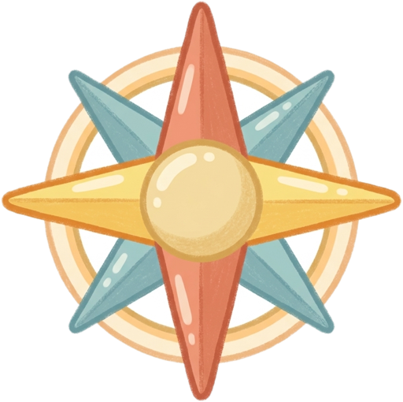
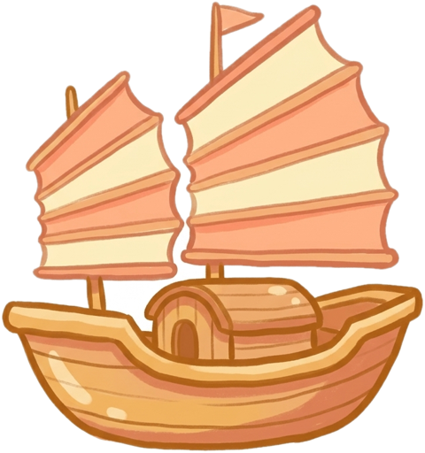

handdrawn-map-kit
Declarative YAML to hand-drawn cultural maps — pencil, ink & watercolor for Node.js and AI agents. 手绘人文地图引擎
npx handdrawn-map-kit render japan.yaml -o japan.png
Rendered specimens · 示例作品
Two full cultural maps built straight from YAML specs — complete with Natural Earth coastlines, vintage zebra borders, compass roses, and illustrated regional stamps.

How it works · 三步出图
Describe a region and its cultural landmarks in YAML, run one CLI command, and get a print-ready hand-drawn map — plus diagnostics JSON for autonomous agent iteration.
Write a YAML spec
map:
title: "JAPAN"
subtitle: "Nippon · East Asia"
region: "JPN"
size: [1500, 1000]
style:
medium: [pencil, ink, watercolor]
border: zebra-vintage
compass: bottom-right
font: ZCOOL XiaoWei
layers:
natural_earth: [borders, rivers, peaks]
stamps:
- { id: mt_fuji, at: [138.7, 35.4] }
- { id: torii_gate, at: [132.3, 34.3] }
- { id: ramen_bowl, at: [141.3, 43.1] }
layout:
avoid_collisions: trueRun one command
npx handdrawn-map-kit render japan.yaml \
--out japan_cultural_map.png \
--diagnostics report.json
# → 1500×1000 PNG · 0 overlapsOutputs a crisp PNG/SVG plus a structured JSON report so an AI agent can check crowding and refine coordinates in a loop.
Get a hand-drawn map
Inside the sketchbook · 六大核心能力
Everything needed to turn geographic data and cultural stories into warm, illustrated cartography — whether driven by a human script or an AI agent.
Declarative spec + CLI
Author regions, routes, banners, and stamps in plain YAML or JSON, then render deterministic pencil-and-watercolor maps from a single Node.js CLI command.
Natural Earth geography
Ships with bundled Natural Earth vector layers — country boundaries, provinces, rivers, lakes, cities, and mountain peaks — with zero shapefile setup.
65 hand-drawn stamps
Pandas, the Great Wall, dumplings, pagodas, windmills, ships, and regional fauna illustrated in a unified chunky-ink and soft-wash vector vocabulary.
CJK handwritten lettering
Native Chinese, Japanese, and Korean calligraphic map labels using ZCOOL XiaoWei, framed by vintage zebra borders, compass roses, and ribbon cartouches.
Automatic collision avoidance
Spatial force-aware placement nudges place names, leader lines, and stamps clear of coastlines, city markers, rivers, and neighboring artwork automatically.
Agent Skill + diagnostics JSON
Bundled with an Agent Skill and machine-readable layout diagnostics JSON (overlaps, density, margins) so AI agents draw, inspect, and refine maps on their own.